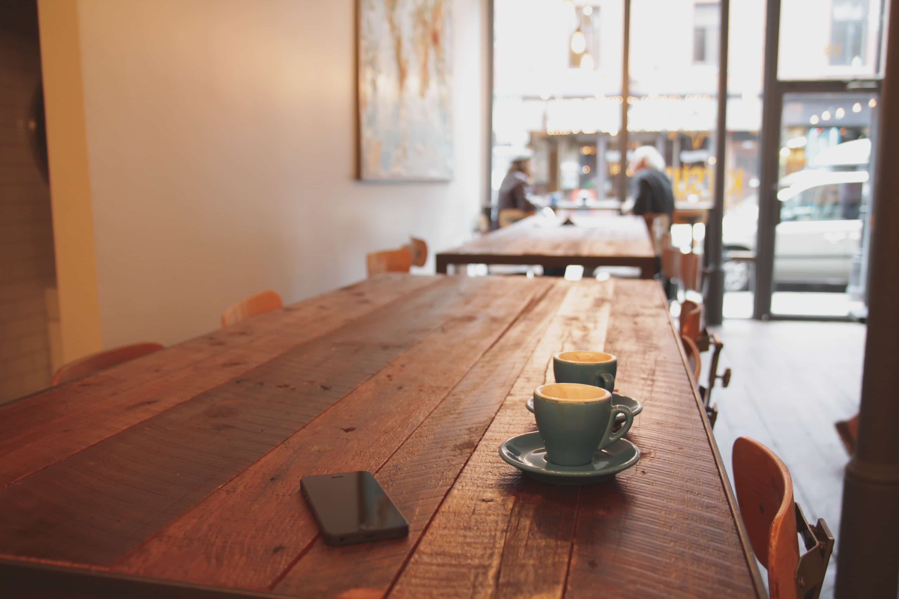
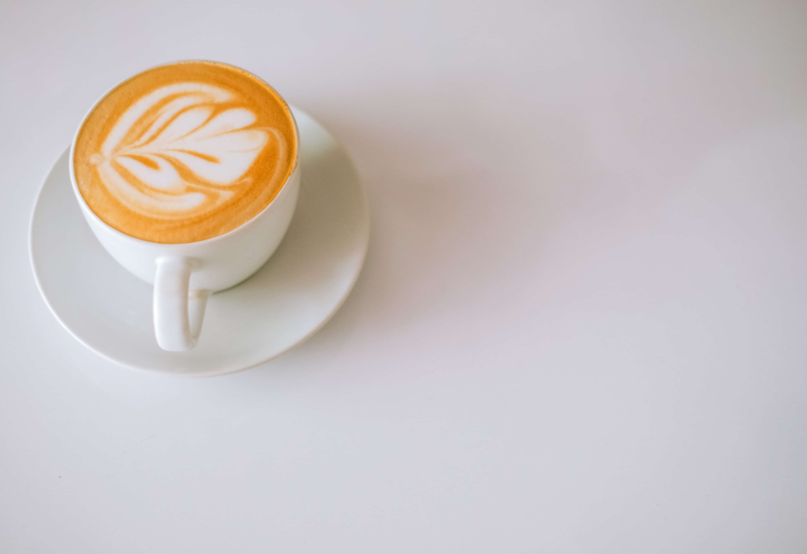
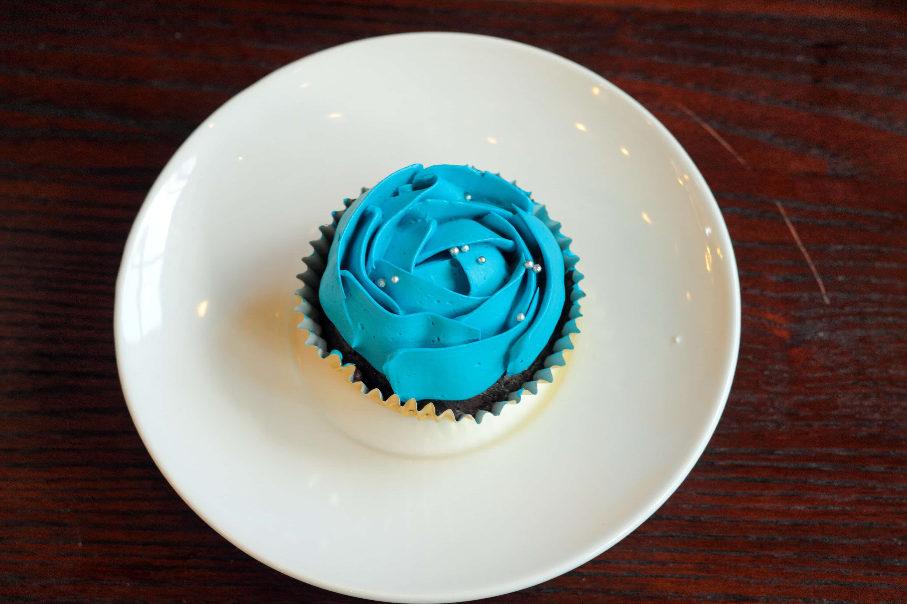
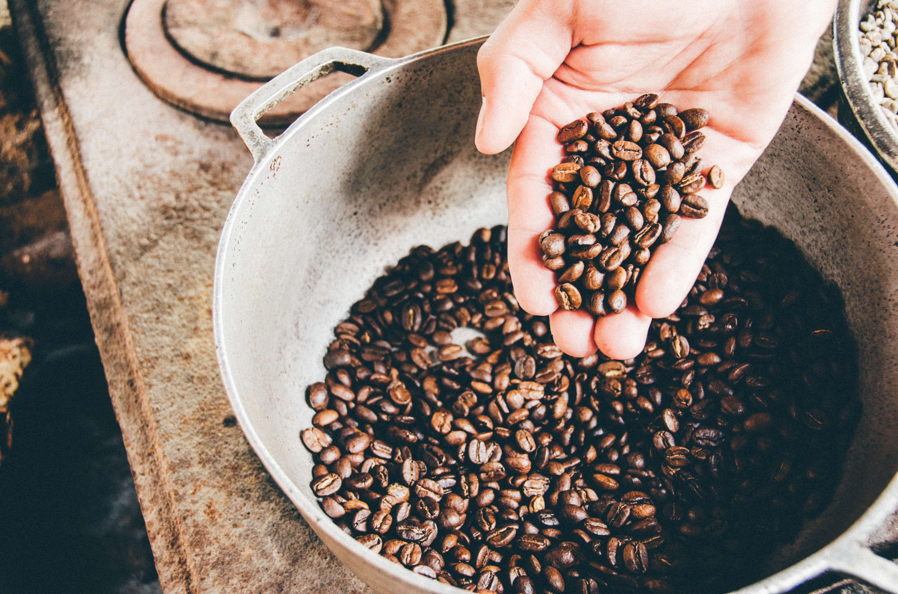
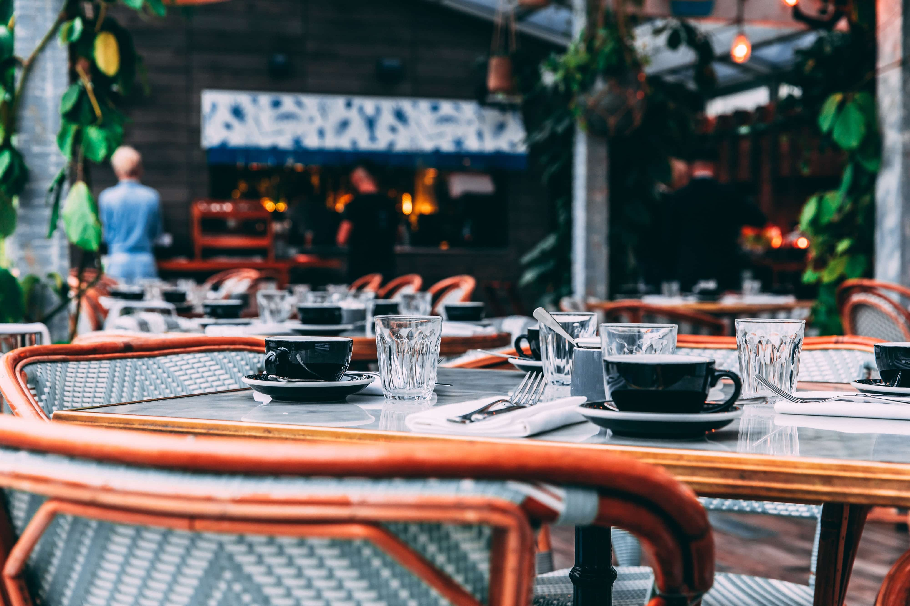

K's Cafeのこだわり
東京新宿区にある モダンカフェ「K's Cafe」です。 都会の中にありながら、落ち着いた雰囲気を味わうことができます。 また、雰囲気だけではなくコーヒーとケーキにもこだわっています。 多くのリピーターの方たちに支えられて作り上げられているお店です。 日々のストレスから開放される空間をご提供いたします。
"おいしさのこだわり"
-

Interrier
こだわりの店内。カナダのモントリオールにあるカフェからインスピレーションを受け、現地の建築家を呼び寄せて設計から依頼しております。 東京にいながら海外の雰囲気をお楽しみいただけます。
-

Coffee
コーヒー豆はブラジルから直接生豆として取り寄せを行い、店内で焙煎を行っております。 こだわって選びぬかれた豆の味をご堪能ください。 また、コンテストで受賞経験があるバリスタが淹れたてのコーヒーをご提供いたします。
-

Cake
ケーキもフランスで修行を積んだパティシエが毎日丁寧に作っています。 コーヒーの苦味にあった絶妙な甘みのケーキを是非ご堪能ください。
コーヒー豆量り売り
K's Cafeのコーヒーの味を自宅でも楽しみたい。 そんなお客様のご要望にお応えして店内でコーヒー豆の量り売りを始めました。 店内でお気に入りのコーヒー豆が見つかったら是非自宅でもご賞味ください。 店内でグラインドした粉での販売も行っておりますので、お気軽にお申し付けください。
アクセス

外観からも見て取れる開放的なカフェとなっております。
テラス席も用意しており、天気が良い日は終日お席が埋まることが多くなっております。
K's Cafe
〒100-0000 東京都新宿区
新宿駅西口から徒歩１分
新宿駅東口から徒歩２分
| 電話番号 | 00-00000-0000 |
|---|---|
| 営業時間 | 9:00〜20:00 |
| 定休日 | 火曜日 |
| 駐車場 | なし |